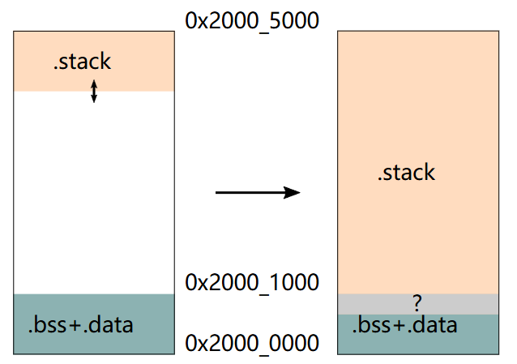
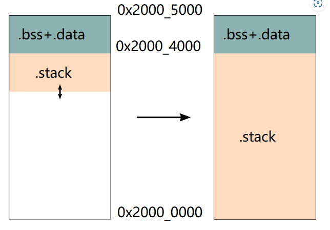

一次Stack Overflow的学习，踩坑与疑惑
本文最后更新于 2025年6月30日 下午
一次Stack Overflow的学习，踩坑与疑惑
—是内存意义上的Stack Overflow(x
我其实挺水的，只会穷举，在这几天时间编译了n次这个固件。看了这篇文章你就知道我有多水，啥都不会。
写这篇文章的目的之一，就是N年后再回头看看，这到底是怎么个事？？？
起因
我最近给py32-hal做了Flash支持，主要是为了能在RMK上跑。我在之前做好usb后，就给rmk拉了PR，添加py32f07x的example。RMK作者HaoboGu这几天还做了个pypad来玩。
于是我想再给RMK拉个PR更新py32-hal的版本，增加Flash支持，为了能够保存vial改键的数据。
但是一跑，不对劲了：

但是RMK写死的64：
1 | |
在调用embassy_usb的builder之前，值是正常的（图里我写了个11测试），然后builder内部，无论我写多少，传进去再打印都是32。其它的参数暂时没问题。

但是判断它是不是32，却匹配不上。
1 | |
怎么会逝呢？我进一步测试：(正确值为11，打印值恒为32)
1 | |

我首先怀疑的是内存对齐问题，猜测是两个crate内结构体内存不对齐导致的。我在builder函数调用前，使用core::mem::offset_of!完全正常，但是在builder函数内，ffset_of!返回的值就非常离谱，比如0xFFFFFFFF。这个时候，我怀疑是栈溢出了。
确认问题
确认问题也花了非常长的时间。我决定首先使用probe-rs观察sp(stack pointer)寄存器。
这是一个典型的cortex-m的栈：

程序中使用了flip-link，.bss和.data将被放在高地址：

观察sp寄存器，发现sp的值始终恒定，并且远大于0，按理说没有溢出（？）。

嗯。。。。
后来，当我使用defmt来打印sp的值的时候，发现sp的值会变化，只是不知道为什么probe-rs的调试窗口sp的值不会变。不过。。sp的地址怎么还不对？
再后来，我发现在build.rs中，这么写其实不会生效：
1 | |
通过cargo nm，可以看到_stack_start仍然在最高地址。。。。

事实上，必须写在.cargo/config.toml中才会生效
1 | |
这两个坑，导致我花了很长时间都没有确认问题。
当我真的开启flip-link后，一跑就挂掉了

开始的时候，我希望在HardFault里我希望捕捉一个内存错误之类的，来证明是栈溢出，
但是，这些cortex-m的SCB寄存器似乎也在thumbv6m中无效：

其实开启flip-link之前，在main函数里，sp已经低到了.bss的范围里(因为有个async 异步运行时)。程序不久后就触发了HardFault。
深入分析
同时，我还发现了一个奇怪的现象：使用py32-hal 0.2.0版本，根本不会栈溢出，最新的RMK仍然如此。但是使用py32-hal 0.2.1，马上就溢出，而且main函数sp低了将近4K。固件里，embassy的task arena占了4k多，defmt的缓存1k，其它乱七八糟的.bss 2K，栈9K，就爆掉了。。
py32-hal 0.2.1到0.2.0，主要是把USB驱动代码移动到musb crate里，增加了Flash支持（还没用到），按理说stack增加4K有点太离谱了。
我将代码回滚到刚重构完USB驱动代码的时候，那时候musb crate 的内容几乎都是从py32-hal复制出来没怎么修改的，但仍然爆stack。
我想起来之前测试匹配问题的时候，直接使用crate.io的embassy-usb和从crate.io copy到本地而没有任何修改的embassy-usb，代码行为不太一样（可能是爆stack的位置不同），于是，我又把musb copy回到py32-hal里（当然结构不一样了，主要是musb crate有自己的寄存器访问模块），仍然爆stack。
这就离谱了。
cargo-call-stack
于是，我请出了japaric/cargo-call-stack。这个家伙真的用请的，跑起来它，我用了三个小时。
它最后能测试的的版本是nightly-2023-11-13，但是这对于咱Nightly Rust来说，已经太古老了。
比如，这些feature还需要手动开启：
1 | |
#[collapse_debuginfo(yes)]在nightly-2023-11-13中也没有yes这样的参数，不幸的是，Embassy系的crate大量使用了这个东西。
cfg-if的core feature会使用这个package:
1 | |
但是在nightly-2023-11-13里会报错。

诸如此类好些问题，我拉了一堆crate到本地打patch，才算是编译过。
但已运行，又出现了问题：panicked: BUG? no symbol at address 134222428 。查看argo-call-stack源码，call-stack使用addr2name来获取符号，但是这个地址似乎真的没有对应的符号。我只好将它也拉下来，将panic改为warn并跳过。
这样的warn有五百多个，好在不怎么影响最终效果。
但总归是跑起来了。生成的svg是这样的：（只是一小部分）

嗯……没有可读性。不过通过对比生成出来的dot文件，我发现唯一的异常之处：
1 | |
在使用py32-hal 0.2.0的情况下，这个poll函数的local只有5K多。
但是这就涉及我的知识盲区了：Async Runtime我大概知道怎么回事，但是细节或者涉及到底层，我就完全不清楚了。为什么poll函数的local这么大，还这么有弹性，就搞不懂了。
1 | |
Stack爆减
减小这个函数的stack，超出我的能力范围了，我也在这个问题上折腾了有够长时间。我想，看能不能改下编译参数，减小stack大小。
在Cargo.toml中来配置编译参数，比如：
1 | |
opt-level使用2或3，比z或s能减小300 Bytes左右。
lto = "fat"则有增加stack的效果。
codegen-units
接下来是神奇的codegen-units。
This flag controls the maximum number of code generation units the crate is split into. It takes an integer greater than 0.
When a crate is split into multiple codegen units, LLVM is able to process them in parallel. Increasing parallelism may speed up compile times, but may also produce slower code. Setting this to 1 may improve the performance of generated code, but may be slower to compile.
The default value, if not specified, is 16 for non-incremental builds. For incremental builds the default is 256 which allows caching to be more granular.
文档中，说默认值是16（非增量编译），1的话代码速度就最快。我在开发的时候一直使用codegen-units = 1。
当我将它改为16的时候，神奇的事情发生了：main函数进入时的sp增高4K！！！
main函数应该是由poll调用，所以大概率就是poll的stack减小了4k。
尝试验证
这个在nightly-2023-11-13上面无法复现，无论如何不会减小stack。
因此，我想试试在最新nightly上跑下cargo-call-stack，来验证是不是poll的stack减小了4k。
首先，需要设置这样的环境变量：
1 | |
想必这次其实是必然失败的…
首先是遇到了这个：error: missing –crate-name argument · Issue #110
我也没太看懂call-stack的Rustc Wapper是怎么个事，总之是将这个参数的.unwarp改为了.unwarp_or("test_crate_name")。然后还是拉了几个crate下来，总之是编译过了。但是在运行的时候，又出现了：
1 | |
error: Did not find ELF magic number on latest nightly · Issue #109
我出现错误的llvm IR位置是这样的内容：
1 | |
[line 2074-2078]
失败了。
为什么呢？
为什么增大codegen-units，stack就会这么大程度地减少？不是codegen-units越低，代码越快，编译越慢吗？
为什么poll函数会有这么大的local stack？编译器是怎么确定它的local stack大小的？
为什么重构了usb驱动就会导致poll函数的stack扩大将近一倍？是否是寄存器访问模块零散的函数导致的？（使用 chiptool 生成，chiptool不使用MMIO，而是直接生成操作函数）
2025年6月9日更新
后面，我试图给py32加上storage，也就是能存键位。为此，我还给py32写了flash驱动。
但是，加上storage，又爆栈了。。。。。。而且使用修改codegen-units仅能缩小一点……

此人是Jason/Haobogu，RMK作者。
甚至使用新版RMK，embassy的task-arena都爆了…………
embassy-task-arena我记得之前用掉的1K不到，这么爆了，栈都还没发言呢……
可能和这两个PR有关：
Statically allocated task pools on stable by 0e4ef622 · Pull Request #4007 · embassy-rs/embassy
Statically allocate task pools on stable Rust. by Dirbaio · Pull Request #4020 · embassy-rs/embassy
还没细细研究。
此外，另一个PR也值得关注，看看未来async的pool stack会不会有改善吧。作者似乎还是华人。